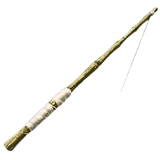

Primera aparición: Temporada 2 - capítulo 5
Descripción: Una caña utilizada para capturar peces (obvio). En ARK se consigue botínes muy buenos al pescar dependiendo del cebo que suele ser sangre de sanguijuela. La pesca es muy popular entre las personas mayores y siempre ha sido una de las actividades favoritas de los humanos. La caña ha sido un invento histórico que revolucionó la caza de la pesca que fue descubierto por Helena hace más de 1000 años.